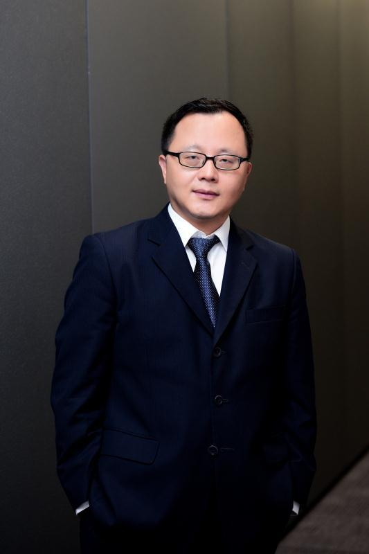
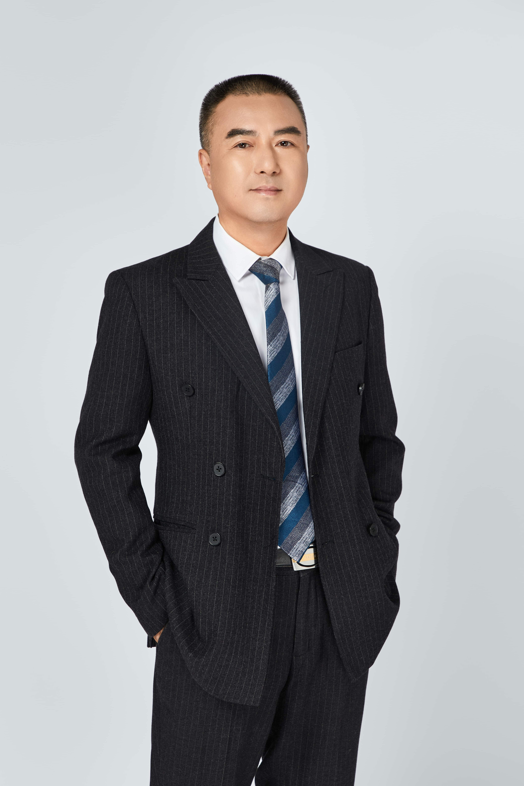
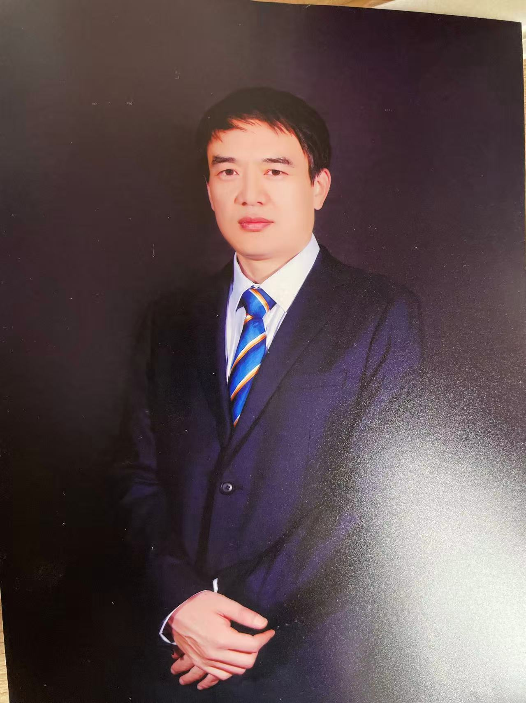

The specialized platform for the global Chinese. 专注服务全球华人的首选资产管理平台。
Become a specialized asset management platform focusing on — and preferred by — the global Chinese community. 致力于成为专注服务全球华人的首选专业资产管理服务平台。
GoldBay Capital serves the global Chinese community from Australia, China, and the United States — built on long-termism, professionalism, and independence. 金湾资本注册于澳大利亚，管理团队分布于澳洲、中国和美国——以长期、专业、独立为准则，专注服务全球华人。
GoldBay Capital (GBC) is a fund management institution registered in Australia, with team members in Australia, China, and the U.S. GBC focuses on providing the global Chinese community with professional asset allocation into global markets, and is committed — on the values of long-termism, professionalism, and independence — to becoming the most trustworthy platform preferred by the global Chinese for their asset allocation.
GBC's management members have working experience across the financial markets of China, the U.S., and Australia for nearly 30 years, ranging across several sub-industries — from public fund management, venture capital, underwriting sponsorship, and commercial banking to trust investment — and covering industry research, due diligence, product design, fund management, risk control, capital raising, and post-investment management. Accumulated AUM exceeds RMB 40 billion, with performance frequently ranked at top levels.
金湾资本是一家注册在澳大利亚，管理团队分布于澳洲、中国和美国的基金管理机构。秉承长期、专业和独立的服务理念，专注为全球华人提供专业的资产全球配置服务，致力于成为全球华人资产配置的最值得信赖的首选平台。
金湾资本的管理团队在中国、美国和澳洲三个金融市场平均拥有近30年的工作经验，横跨公募基金、风险投资、保荐承销、商业银行和信托投资等多个金融子行业，涵盖资本市场、信贷市场和另类市场的行业研究、尽职调查、产品设计、基金管理、风险控制、资金募集和投后管理等领域，累计资产管理规模接近400亿元人民币，并在当地市场排名中多次名列前茅。
GBC focuses on assets including the shares markets and non-listed businesses of the U.S., Australia, and Hong Kong, as well as the land market and mortgage credits of real estate in Australia. Through FOF, MOM, and risk-tiering approaches, we provide investors with a diverse set of options across different risk profiles and return expectations.
In addition — as part of our value-added services — GBC offers, based on the management team's global connections, our investors and their stakeholders advisory and implementation services across overseas study, immigration, and career development in the global financial industries.
金湾资本关注的资产包括美国、澳洲和香港的股票市场、非上市公司股权投资市场，以及澳洲的土地投资市场和房地产抵押信贷市场。通过 FOF、MOM 与风险分层等方式，为不同风险偏好和投资回报期望的投资者提供种类丰富的投资选择。
此外，作为增值服务的一部分，金湾资本凭借其管理团队的全球资源网络，为我们的投资人及其利益相关人提供全球留学移民和金融职业发展的咨询和实施服务。
Become a specialized asset management platform focusing on — and preferred by — the global Chinese community. 致力于成为专注服务全球华人的首选专业资产管理服务平台。
Capture global investment and development opportunities — providing customized services across asset growth, next-generation career development, and the orderly inheritance of wealth. 捕捉全球投资机会和发展机会，为我们投资人的资产保值增值、子女职业发展和财富有序传承提供定制化服务。
The three values that govern every research call, every allocation, and every client conversation — without exception. 贯穿每一次研究判断、每一项资产配置和每一次客户对话的三项原则，恒久不变。
Three founding partners. Nearly three decades of average experience across the public fund, investment banking, commercial banking, trust, and venture capital industries. 三位创始合伙人，平均近三十年的从业经历，横跨公募基金、投资银行、商业银行、信托与风险投资行业。

Founding Partner · Chief Executive Officer · Oceania 创始合伙人 · 首席执行官 · 大洋洲业务
26+ years in financial services across China and Australia. Responsible for daily operations, investment decision-making, public relations, and business in Oceania. 在中国与澳洲金融行业拥有 26 年以上工作经验。主管公司日常运营、投资决策、公共关系与大洋洲业务。
George Xia has over 26 years of working experience in the financial services industry across China and Australia. He has served as Project Manager of the Overseas Cooperation Department of Yuejin Motor Group, Senior Trust Manager of Union Trust, Deputy General Manager of the Corporate Banking Department of the Shanghai Branch of Shenzhen Development Bank (000001.SZ), Deputy CEO of the Shanghai Trust Registration Center, Deputy General Manager of the Shanghai Urban Construction (now STEC 600820.SH) Fund Management Co., Ltd., and Founding Partner of Meditation Capital.
Across these roles he has held positions as Chairman, CEO, and board member of several invested companies, and has published specialized papers in top professional journals in China including the website of the Legislative Affairs Office of the State Council, China Bond, China Investment, and Civil Engineering Economy.
He has also held positions in non-profit organizations: Vice Chairman of the first session BOD of the Tsinghua Alumni Go Association, Expert Judicator (Venture Capital) for the 15th Chunhui Competition of Entrepreneurship and Innovation for Chinese Students in Melbourne, BOD member of the Australia Sichuan Business Association, BOD member of the Melbourne Tsinghua Alumni Association, and BOD member of the Melbourne SEU Association.
He holds a Bachelor of Engineering from Southeast University (SEU), a Master of Economics from the National University of Singapore (NUS), and an EMBA from Tsinghua University. He holds memberships and certificates of the Asset Management Association of China (AMAC), RG146, and the Finance Brokers Association of Australia (FBAA).
夏锋先生在中国和澳洲金融行业有超过 26 年的工作经验。先后担任跃进汽车集团公司海外合作部项目经理、联华信托高级信托业务经理、深圳发展银行（000001.SZ）上海分行公司业务部副总经理、上海信托登记中心常务副主任、上海城建（现更名为隧道股份 600820.SH）投资基金管理公司常务副总经理和观奕资本创始合伙人。
期间兼任多家被投公司董事长、总经理和董事等职位，并在国务院法制办官网、《中国债券》、《中国投资》和《市政工程经济》等多家权威媒体期刊发表专业论文。
夏锋先生先后担任清华大学校友围棋协会第一届理事会副理事长、第十五届"春晖杯"中国留学人员创新创业大赛墨尔本预选赛专家评委、澳大利亚四川商会理事、墨尔本清华校友会理事和墨尔本东南大学校友会理事等职。
夏锋先生分别从东南大学、新加坡国立（NUS）大学和清华大学获得工学学士、经济学硕士和 EMBA 等学位，持有中国证券基金业协会基金从业证书、澳洲 RG146 和澳洲贷款中介从业证书。

Founding Partner · Chief Investment Officer · Greater China 创始合伙人 · 首席投资官 · 大中华区业务
25+ years in the China capital market across fund management, equity, debt, FOF, product design, and risk control. Cumulative AUM over RMB 30 billion. 在中国资本市场 25 年以上经验，涵盖基金管理、股权与债券投资、FOF、产品设计与风险控制，累计基金管理规模超过 300 亿元人民币。
Henry Tang has over 25 years of working experience in the China capital market. His scope ranges from fund management, equity investment, debt investment, and FOF to product design and risk control — making him an all-round top investor in China, with cumulative AUM of over RMB 30 billion.
He has served as Project Manager of the Investment Banking Department of Great Wall Securities (002939.SZ); Industry Analyst and then Fund Manager of Dacheng Fund Management; Director of Asset Management, Chief Strategy Analyst and Fund Manager of the first FOF at CITIC Securities (600030.SH); General Manager of the Multi-Asset Management Department of China Securities (601066.SH, 6066.HK); CEO of CSC Asset Management Co., Ltd.; and Co-CEO of Beijing Genesis Investment Management Co., Ltd.
He is among the first batch of public fund managers in China and the first batch of Golden Bull fund managers — the top award in China's fund management industry. He has abundant experience in absolute-return investment: at CITIC Securities he managed enterprise annuity funds of over RMB 10 billion with positive returns every year, ranking top in the whole market. As the founder of FOF business at China Securities, his outsourced fund-management return ranked No.1 in 2021.
He has taken positions as External Expert invited by PICC (601319.SH, 01339.HK), independent board member of IPE Pack (6616.HK), and Deputy Secretary-General of Liuzhou City on a temporary appointment.
He holds a Bachelor of Science and Master of Management from Beijing University and an MBA from the University of Wisconsin — Madison. He holds memberships and certificates of the CFA (U.S.), CPA (China), the Securities Association of China (SAC), AMAC, and the Hong Kong Securities Institute (HKSI).
唐红林先生在中国资本市场有超过 25 年的工作经验，其工作范围涵盖基金管理、股权投资、债券投资、FOF 投资、产品设计和风险控制等领域，是国内资本市场顶级的全能型选手，累计基金管理规模超过 300 亿元人民币。
先后担任长城证券（002939.SZ）投资银行部项目经理、大成基金行业研究员和基金经理、中信证券（600030.SH）资产管理部总监、首席策略分析师并兼任中信证券首支 FOF 基金投资经理、汇赢基金筹备组负责人、中信建投（601066.SH，6066.HK）多元资产管理部总经理、中信建投利信资本管理公司总经理、北京源晖投资管理公司联席总经理等职位。
唐红林先生是国内第一批公募基金经理，第一批金牛基金经理，管理过中信证券上百亿人民币规模的企业年金账户，每年都是正收益，收益率市场排名居前，有着丰富的绝对收益经验。作为中信建投基金 FOF 业务创办人，2021 年委外投资业绩第一。
唐红林先生曾任中国人保（601319.SH，01339.HK）外部专家委员和环球新材（6616.HK）独立董事，并曾挂职柳州市人民政府副秘书长。
唐红林先生先后从北京大学获得理学学士和管理学硕士，以及美国威斯康星（The University of Wisconsin - Madison）大学 MBA 学位，并持有美国金融注册分析师（CFA）、中国注册会计师（CPA）和中国及香港证券从业资格等证书。

Founding Partner · Chief Economist · North America 创始合伙人 · 首席经济学家 · 北美业务
20+ years of R&D in global capital markets. Contributing economist to FT Chinese. Focus areas: macro, monetary theory, absolute valuation, cross-market cycles. 在全球资本市场投研工作 20 年以上。FT 中文网特约经济学家，专注宏观、货币理论、绝对估值与跨市场周期研究。
Andrew Chen has over 20 years of working experience in R&D in the global capital market. He has held positions as Assistant Professor of Tennessee State University; Senior Researcher at CITIC Securities (600030.SH) and at the Research Center of the China Securities Regulatory Commission (CSRC); and Research Director of Morgan Stanley Investment Management (China) Co., Ltd.
He is the economist specially invited by FT Chinese (under UK Financial Times), focusing on macro economy, capital markets, industry research, and absolute valuation of stocks across China and the U.S. He has unique and systematic research outcomes on monetary theory, the interactive effects between financial services and the real economy, and the imbalance and rebalance of economic growth.
He successfully predicted major events including the end-mechanism and pathway of the U.S. subprime mortgage crisis and the European debt crisis; the strong recovery of the U.S. economy after Covid-19 in 2020; Joe Biden's victory in the 2020 U.S. presidential election; and the ecological environment change of China's internet platforms and subsequent stock-price trends. He is one of the few economists in the world to predict the change in China's economic system at the earliest.
He holds a Bachelor of Science from Shandong University, a Master of Economics from Beijing University, and a Doctor of Economics from Purdue University. He holds membership and certificate of AMAC.
陈稻田先生在海内外资本市场拥有超过 20 年投研工作经验。先后担任美国田纳西州立大学经济学助理教授、中信证券（600030.SH）和中国证监会研究中心高级研究员和摩根斯坦利基金研究总监。
陈稻田先生也是英国金融时报 FT 中文网的特约经济学家，专注中美宏观经济和资本市场、行业研究和股票绝对估值等领域，对货币理论、金融与实体交互作用、经济增长失衡与再平衡等领域有独到和系统的研究成果。
成功预测了美国次贷与欧债危机的终结机制与路径、2020 年新冠后美国强劲复苏和 2020 年美国拜登胜选等重大事件，成功预测了中国互联网平台生态环境变化与股价走势，是最早预测到近年中国经济体制变化的少数经济学家之一。
陈稻田先生先后从山东大学、北京大学和美国普渡（Purdue University）大学获得理学学士、经济学硕士和经济学博士学位，拥有基金从业资格。